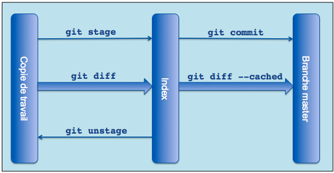

Simple Guide of Git
i.sohu.com
The Birth of Git
导火索：2005, Linux Kernel Team被BitKeeper抛弃，于是决定自己弄个SCM
- Distributed, scaled to handle thousands of developer
- Simple, clean and fast
- Integrity and atomic
- Support and encourage branched development
- Each repository have a full history
Getting quick start
安装
Getting quick start
配置
git config --global core.autocrlf false
git config --global user.email “ryanchen@sohu-inc.com”
git config --global user.name “Hao Chen”
Getting quick start
克隆
git clone git@git.i.sohu-inc.com:isohu.git #ssh Protocol
Getting quick start
修改/提交
touch hello.py
git add hello.py
git status
git commit -m "add hello.py"
git log
git show xxxxx
git push origin master
A bit of Internals of Git
Objects, References, The Index

A bit of Internals of Git
References
-
branch, remote branch, tag
都是指向object的指针(一般都指向commit object) 都存储在.git/refs/.
-
Symbolic References
一种特殊的ref,不直接指向object，而是指向其他的ref，比如HEAD，指向current branch。存储在.git/HEAD
A bit of Internals of Git
The Index
staging area,git add->git commit
Why Git?
仓库更小巧
没有乱七八糟的.svn文件夹
用.gitignore忽略不想提交的文件
Why Git?
暂存区/Staging area(Index)

git add hello.py
#do some changes to hello.py
git status
#commit now will only commit file in index
#do some changes to hello.py again
git checkout -- hello.py #从index上恢复文件
Why Git?
暂存修改(stashing)
git stash save "work in progress for xxx feature"
#do some boss assigned work,now go back to the stashed state
git stash list
git stash apply
git stash clear
Why Git?
本地仓库/本地分支
git log #查看文件修改历史
git branch dev abe0da #从某个历史新建分支
Why Git?
分支 分支 分支
Why Git?
alter commit history
git commit --amend
rebase/squash
Why Git?
开发流程(workflow)
Advanced Topics?
- hook
- rebasing/squash
- reflog
- blame
- github/gitolite/gitlabhq